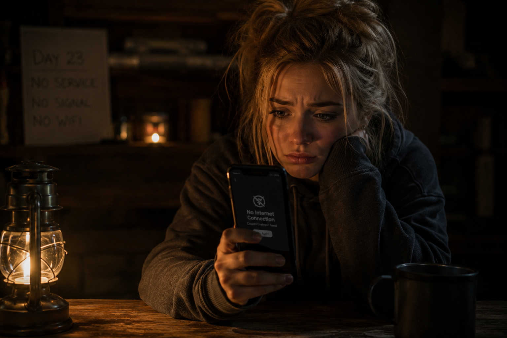
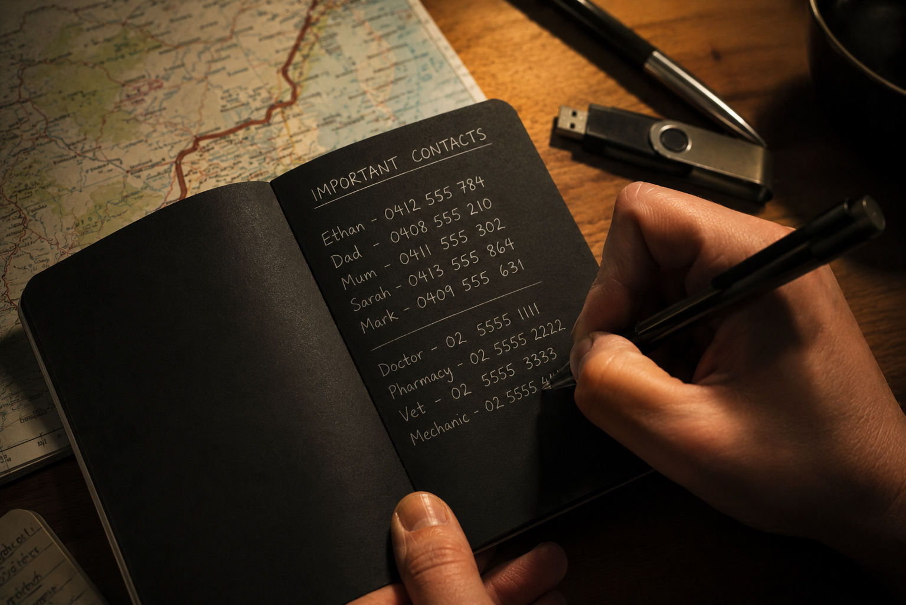
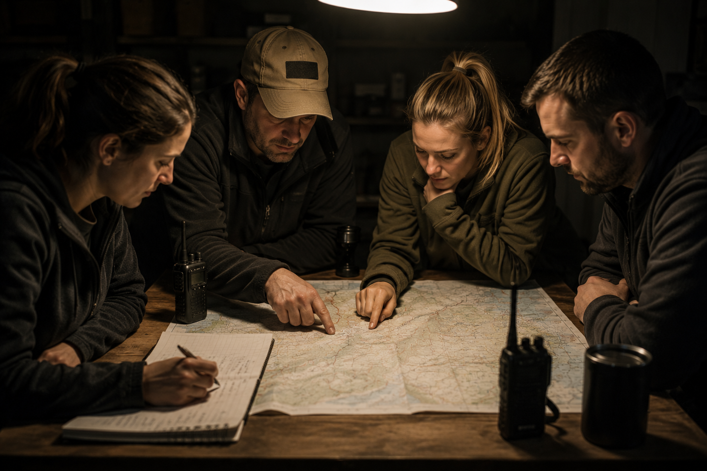

⚠ Emergency Preparedness Guide///🎒 Build Your Go Bag///💧 Store Water Now///⚡ Plan for Power Failure///📡 Off-Grid Communications///🩺 Know First Aid///🛠️ Skills Over Kit///⚠ Emergency Preparedness Guide///🎒 Build Your Go Bag///💧 Store Water Now///⚡ Plan for Power Failure///📡 Off-Grid Communications///🩺 Know First Aid///🛠️ Skills Over Kit///
⚠ Emergency Preparedness
Be Ready Before You Need To Be
Prepping isn't paranoia — it's prudence. Disasters, blackouts, civil unrest and supply-chain
failures are real events that happen to ordinary people. This guide covers everything from
a 72-hour go bag to long-term resilience: water, food, power, comms and the skills that
actually matter when the grid goes down.
🎒 Go Bag💧 Water Storage🥫 Food Stockpile⚡ Power Backup📡 Off-Grid Comms🩺 Medical Kit🛠️ Skills💷 Financial Resilience
Master this hierarchy before you buy a single piece of kit
Every prepper starts here. Before you buy a single piece of kit, understand the order in which
threats kill you. Use this hierarchy to decide where to spend your time and money first.
3
Minutes
Without Air
Airway obstruction, cardiac arrest, toxic atmosphere. CPR and basic first aid take priority over everything else.
3
Hours
Without Shelter
In extreme cold, heat, or wet conditions, hypothermia and heat stroke kill fast. Shelter and dry clothing are second.
3
Days
Without Water
Dehydration becomes lethal surprisingly quickly, especially with exertion, heat or diarrhoea. Water is your third priority.
3
Weeks
Without Food
The body is remarkably resilient without calories. Don't let food anxiety distract you from the priorities above.
3
Months
Without Community
In a prolonged crisis, isolated individuals fail. Your network of trusted people is your most valuable long-term resource.
🎒
Bug Out Bag — The Go Bag
Grab it in under 90 seconds. Pack it to last 72 hours.
A go bag (also called a bug-out bag or BOB) is a pre-packed bag you can grab in under 90 seconds
if you need to leave home in a hurry. Aim for a waterproof 50–65L rucksack weighing no more than
you can carry comfortably for four hours. Pack it as if you won't return home for 72 hours.
Golden rule: Rotate perishables (food, water, medications, batteries) every
6–12 months. A go bag only works if everything in it is actually usable when you need it.
Set a calendar reminder.
💧 Critical
Water & Hydration
1L stainless steel or BPA-free water bottle
Sawyer Mini or LifeStraw portable filter
Aquatabs or iodine purification tablets (x30 minimum)
2L collapsible water bladder for bulk carrying
Electrolyte sachets (oral rehydration salts)
Target 2L per person per day minimum
🥫 Critical
Food (72-hour supply)
High-calorie energy bars (aim for 500–600 kcal per bar)
Age-appropriate child go bag (school backpack with their essentials)
Nappies, formula, baby food if applicable
Child's favourite comfort item (reduces panic)
Copies of medical records, vaccination history
Contact details for school, close family, doctor
Activity book / cards (managing downtime reduces stress)
Pet kit: food, water bowl, leash, vaccination records, carrier
💧
Water Storage & Purification
Without it you have 3 days. With it, you have everything.
Water is non-negotiable. Your body can survive weeks without food; it cannot survive days without
clean water. The average adult needs at least 2 litres per day for drinking — more with heat,
exertion, or illness. Planning for sanitation, cooking, and hygiene, budget at least 4 litres
(1 gallon) per person per day.
💾 Home Storage
Minimum target: 3-day supply (72-hour kit)
Ideal target: 2-week supply per household member
Use HDPE food-grade containers (blue water barrels, Jerry cans)
Store in a cool, dark location — sunlight promotes algae
Add 2 drops of unscented bleach per litre to untreated tap water
Rotate every 6–12 months — set a calendar reminder
Know the location of your nearest river, stream, or canal as a backup source
Swimming pools (diluted chlorine) and water heaters are emergency reserves
🔬 Purification Methods
Boiling: 1 minute at a rolling boil (3 minutes above 2,000m). Kills bacteria, viruses, protozoa.
Chemical — Aquatabs (NaDCC): 1 tablet per litre, wait 30 minutes. Compact, cheap, essential.
Chemical — Iodine tablets: Effective backup; not for pregnant women or prolonged use.
Filtration — Sawyer Mini: Removes bacteria and protozoa (not viruses). Combine with chemical treatment.
Filtration — LifeStraw: Drink-through filter; same caveat re: viruses.
Gravity filter — Berkey / Doulton: For home use; removes most contaminants including some viruses.
Solar disinfection (SODIS): Clear PET bottles left in full sun for 6+ hours. Last resort.
Virus risk: Most portable filters do NOT remove viruses. In the UK and Western Europe,
viral contamination of natural water sources is relatively uncommon, so filtration alone is often
sufficient. In disaster zones or developing-world scenarios, combine filtration with chemical treatment.
🥫
Building a Food Stockpile
Three tiers — short, medium, and long-term. Start with what you already eat.
The best food storage strategy is to simply buy a bit more of what you already eat. Rotate your
stock on a first-in-first-out basis and nothing goes to waste. Build in layers — short term first,
then extend to medium and long term as budget allows.
🥫Short 1–2 Weeks
Everyday Pantry — Buy More of What You Already Eat
These items need no special storage and are used in your normal cooking. Just keep a rolling surplus.
Bulk Staples — Stored in Mylar Bags Inside Food-Grade Buckets
Add oxygen absorbers and seal. Stored correctly, most bulk staples last decades. Label with date packed.
White rice (30-year shelf life)Rolled oats (30+ years)Hard white wheat / flourDried beans, lentils, chickpeasHoney (indefinite)Salt (indefinite)White sugarWhite vinegarBaking soda & baking powderHardtack biscuits (homemade, multi-year)
FIFO — First In, First Out: Always use the oldest items first and restock from the back.
Store food in a cool (below 15°C / 60°F), dark, dry location. Every 5°C lower doubles the shelf life.
Never store food directly on a concrete floor — moisture migrates through.
⚡
Power When the Grid Fails
From power banks to solar — a layered approach to energy independence.
Most UK/US household power outages last hours to days. Extended blackouts — from severe storms,
infrastructure attack, or prolonged grid failure — require a layered approach to both energy
and lighting.
⚡ Power Sources (Cheapest → Most Capable)
Power banks (20,000 mAh+): Immediate, portable, no noise. Enough for several phone charges. Keep at ≥80% charge.
Solar panel (20–40W foldable): Slow but free recharging for power banks and small devices. Works on cloudy days at reduced output.
Portable power station (Jackery, EcoFlow, Bluetti): 500–2,000Wh. Run a CPAP, LED lights, laptop, fridge for short periods. Recharge via solar or mains.
Petrol / diesel generator: High power, noisy, requires fuel storage (add stabiliser, rotate). Never run indoors — CO kills.
12V / 24V solar system: Longer-term solution with deep-cycle (AGM or lithium) batteries. Powers essential circuits indefinitely.
🕯️ Lighting & Heat
LED headtorches (AA): AA batteries are universally available and last years in storage. Carry spares.
Hand-crank LED lanterns: No batteries needed for basic lighting. 1 min crank ≈ 15 min light.
Solar garden lights: Charge outdoors, bring inside at night. Surprisingly effective for ambient light.
Candles: Long burn time; store 50+ for extended outages. Use in a closed tin for stability.
Camping gas stove: Cooking and boiling water. Store 6+ gas canisters.
Kelly kettle / rocket stove: Boils water on twigs in minutes. No fuel cost.
Wood stove: Heat and cooking. Ideal if you have a fireplace. Stock 1–2 face-cords of wood.
📡
Staying Connected When Networks Fail
Cell towers have 4–8 hours of backup power. What happens after that?
Make a plan first: Agree a meeting point, a check-in time, and a rally location
with your household before anything happens. Write it down. Tape it inside a cupboard.
No technology required.
Method
Range
Licence?
Works Offline?
Notes
Hand-crank / solar emergency radio
Receive only
No
Yes
Receive national emergency broadcasts, BBC Radio 4 LW, shortwave. Essential for situational awareness.
PMR446 walkie-talkies (UK/EU)
~2km open, less in buildings
No
Yes
FRS / GMRS in the US. Pair with family members. Buy identical models for simplicity. Great for group coordination.
Digital mobile radios (DMR / D-STAR)
5–30km with repeaters
Yes (amateur)
Yes
Much better range and audio quality than PMR. Local amateur repeaters often stay on-air with generators during disasters.
Amateur (ham) radio — HF
Worldwide
Yes (full licence)
Yes
The gold standard for off-grid global communications. UK Foundation licence is a weekend course. No mains power needed with a 12V setup.
Satellite communicator (Garmin inReach)
Global
No
Yes
Two-way messaging and SOS via Iridium satellite. Subscription required (~£15/month). Works anywhere on Earth.
Radar app (BLE / Wi-Fi mesh)
BLE ~100m; relayed further via mesh
No
Yes — fully off-grid
Peer-to-peer encrypted comms with no SIM, no internet, no infrastructure. See the group on a live radar screen. Ideal when everything else is down.
🩺
Medical & First Aid
Ambulances may not come. Be prepared to treat until help arrives — or doesn't.
🩸 Trauma / IFAK (Individual First Aid Kit)
CAT or SOFTT-W tourniquet (learn to apply one-handed)
Key skills to learn: First Aid + CPR (Red Cross, St John Ambulance),
Wilderness First Aid (WAFA or equivalent) — specifically designed for scenarios where help
is hours or days away, not minutes. These courses are inexpensive, widely available, and
genuinely life-saving.
💷
Financial & Barter Preparedness
ATMs and card terminals go down with the grid. Cash is king in an emergency.
💵 Cash & Documentation
Keep at least £200–£500 / $200–$500 in small notes at home — secured but accessible
Include coins for parking, machines, and small transactions
Consider gold or silver coins for long-term, high-inflation scenarios (1oz silver coins are highly liquid)
Diversify savings across at least two financial institutions
Store copies of account numbers, bank details, and insurance policies securely off-site or encrypted
Consider a fireproof / waterproof document safe at home
🤝 Barter Goods
In prolonged shortages, people trade what others need. Store modest quantities of high-value barter items:
🥃Alcohol (spirits)
🚬Cigarettes / tobacco
☕Coffee & tea
🔋Batteries (AA/AAA)
💊Pain relief (sealed)
🕯️Candles & lighters
🌿Seeds (vegetable)
🧴Soap & hygiene
🪡Needles & thread
🔧Tools (basic)
📵
What Would You Do Without Your Phone?
Modern life is built on a single device. What happens when it's gone?
Your smartphone is no longer just a communication device — it is your bank, your identity,
your keys, your diary, your two-factor authenticator, and your emergency contact list.
A lost, broken, or stolen phone — or simply a prolonged loss of mobile signal and internet —
can leave you cut off from almost everything that matters. This section covers what you stand
to lose and, more importantly, what you can do about it now.
The Problem
What You Stand to Lose
🔐 Critical
2FA & Authenticator Apps
Google Authenticator, Authy, Microsoft Authenticator — lose your phone, lose access to every account that uses them
Email, banking, work systems, social media, cloud storage — all locked behind a code only your lost device can generate
Recovery process can take days or weeks; often requires identity verification you can't complete without the account you're locked out of
This is the single most disruptive thing most people will face when they lose a phone
🏦 Critical
Banking & Financial Apps
Mobile banking apps — can't check balances, transfer money, or approve payments
Transaction approval — many banks now require in-app approval for online card purchases; without your phone, your card is effectively frozen for online use
Contactless mobile payments (Apple Pay, Google Pay) cease immediately
Crypto wallets — if your wallet app is only on your phone and you have no seed phrase backup, your funds may be permanently inaccessible
Hardware wallets (Ledger, Trezor) and written seed phrases stored offline are essential
📧 Critical
Email & Gmail
Loss of access to incoming messages — bills, notifications, correspondence
Gmail is often used as a password reset address for dozens of other services — lose it, lose everything downstream
Inability to respond to urgent communications from employers, family, or emergency services
Shared family calendars, documents, and Drive files become inaccessible
Memorise your email password and ensure you can log in from any browser
📒● High
Contacts, Notes & Messages
Most people can't recall more than 2–3 phone numbers by memory — everyone else is gone
Years of WhatsApp, Signal, Telegram message history — gone or inaccessible
Notes apps (Apple Notes, Google Keep, Samsung Notes) holding passwords, addresses, account numbers, PINs — lost
Security risk: if your phone is stolen or found, an unlocked or easily guessed device gives a stranger access to everything listed above
Unencrypted notes containing passwords or financial data are a serious vulnerability
☁️● High
Cloud Backups & iCloud
iCloud / Google Photos — years of photos and videos inaccessible if your account is locked or internet is down
App data, saved games, and app settings — not restored on a new device until you regain access
iCloud Keychain passwords unavailable if your Apple ID is locked or you're offline
Shared family albums and memories at risk if the primary account holder is unreachable
Cloud backups require internet to be useful — offline physical backups are essential
🏠● High
Home Automation
Smart heating (Nest, Hive, Tado) — can't adjust temperature or schedules remotely; app-only controls become useless
Smart security cameras (Ring, Arlo, Eufy) — no live view, no alerts, no recorded footage review
Smart locks (Yale, August) — app-only access codes may be unworkable; know your physical key override
Smart lighting, plugs, and appliances — automation routines fail if hub or internet is lost
Smart doorbells, alarm monitoring apps, and CCTV alerts all go dark
Always test the manual override for every smart home device you own

Every service you rely on disappears the moment this screen goes dark.

The analogue fallback: a written phone book and printed backup codes take 30 minutes to prepare and last forever.
The Solution
How to Prepare — Practical Steps
🔐2FA & Accounts
Back Up Your 2FA Access Before You Lose It
This is the highest-priority step. Do it this week.
For every service using an authenticator app, print or handwrite the backup / recovery codes provided when you enrolled — store them in a fireproof safe or sealed envelope off-site
Consider switching to Authy instead of Google Authenticator — Authy supports encrypted cloud sync and multi-device access, so you can recover on a new phone
Consider a hardware security key (YubiKey) as a second 2FA method on critical accounts (Gmail, banking, work) — it works offline, has no battery, and survives a phone loss
Write down the account recovery email address and phone number registered on each major account, and keep this list physically secured
Google, Microsoft, Apple, and most banks all have account recovery processes — but they take time. Backup codes are instant.
🏦Banking & Crypto
Ensure You Can Access Money Without Your Phone
Write down key bank account numbers and sort codes — stored separately from cards, in a physical safe or secured at a trusted family member's address
Know your bank's telephone banking number and your telephone banking PIN / passphrase — phone banking bypasses app requirements entirely
Carry a physical card with a memorised PIN; know which card doesn't require an app for transactions
For crypto: write your seed phrase (12 or 24 words) on paper or metal — store in two physically separate secure locations; never digitally
Consider a hardware wallet (Ledger, Trezor) — these work independently of any phone or app
If your crypto seed phrase only exists on your phone, you don't own your crypto — you're borrowing it until the phone dies
📒Contacts & Numbers
The Written Phone Book — Don't Dismiss It
Print or handwrite the 20–30 most critical phone numbers: immediate family, close friends, GP, dentist, insurance, workplace, breakdown cover, neighbours
Laminate it or put it in a plastic sleeve and tape it inside a kitchen cupboard or to the back of your router
Include full postal addresses for the people you'd need to reach in person if communications failed
Give a copy to each adult in your household and to a trusted person outside it
In an evacuation, you will not have time to try to remember numbers. Have them on paper in your go bag.
🔑Passwords & Notes
Offline Password Management and Secure Notes
Use a password manager (Bitwarden, 1Password, KeePass) — do not store passwords in phone notes apps or browser autofill alone
KeePass stores your vault as an encrypted local file — back this up to a USB drive (not just to cloud); you can access it offline on any computer
Print a "break glass" sheet with your 10 most critical passwords (email, banking, work) — store in a fireproof safe; update it annually
Never store PINs, bank details, or passwords in unencrypted phone notes — Notes, Notepad, and standard SMS are all plaintext
Use Standard Notes (end-to-end encrypted) or the encrypted notes section of your password manager for sensitive information
📸Photos & Backups
Physical and Offline Backups for Irreplaceable Data
Run regular backups to a physical hard drive or USB — not just iCloud or Google Photos, which require internet and an active account to access
Print the most important photos — a physical print survives a cloud account being hacked, suspended, or an internet outage
Keep a USB drive in your go bag with a copy of key documents, photos, and your KeePass vault
Export and save contacts as a .vcf file periodically; store it on the USB drive alongside your documents
Cloud backups are excellent for convenience — but they are not a substitute for a physical copy of irreplaceable data
🏠Smart Home
Test Your Manual Overrides — Right Now
Smart heating: locate and test the physical thermostat controls; know how to set a manual programme without the app
Smart locks: confirm you have a working physical key for every smart lock in your home; test it; keep a spare with a trusted person
Security cameras: configure local SD card recording where possible — so footage is captured even if the cloud subscription or internet goes down
Smart alarms: confirm the alarm has a manual PIN keypad and that every household member knows the code without looking it up on their phone
Know how to disable your smart home hub safely during a power cut (incorrect shutdown sequences can corrupt some hubs)
Smart home devices are convenient. In an emergency, convenience becomes a liability if there's no physical fallback.
📱Spare Device
Consider a Backup Phone
Keep an old smartphone in a drawer, factory-reset and charged — it can connect to Wi-Fi even without a SIM and run apps, authenticators, and cameras
A cheap prepaid SIM card (£5–£10 with credit) on a different network gives you a second number and data connection if your primary network is down
A basic feature phone ("dumb phone") — Nokia 3310 style — makes calls and sends texts on minimal power for days; useful when a smartphone would be dead
If evacuating, grab your charger cable and power bank instinctively — a dead phone is worse than no phone
In a regional emergency, one network often goes down while others remain up. Having a SIM on a second carrier is genuine redundancy.
The 30-minute exercise: Put your phone in a drawer. Now try to do the following: call your partner,
log into your bank account, access your email from a different device, turn on your heating, and unlock your front door.
Every step you couldn't complete is a gap you need to close — and now you have a list.
🛠️
Skills Matter More Than Kit
Equipment can be lost, broken, or looted. Skills travel with you.
A well-prepared person with modest kit and solid skills will consistently outperform a
poorly-skilled person with expensive gear. Invest in knowledge and practice before buying more stuff.
01
First Aid & CPR
Take a certified course (St John Ambulance, Red Cross). Learn Wilderness First Aid for extended-care scenarios.
02
Fire Starting
Practice starting a fire in wet, cold conditions with a ferro rod and natural tinder before relying on it in an emergency.
03
Map & Compass Navigation
Take a navigation course. Practice on local walks. GPS fails; paper maps and a compass do not run out of battery.
04
Water Purification
Know how to find, collect, filter, and chemically treat water from natural sources. Practice before you need to.
05
Food Preservation
Learn to preserve food by canning, dehydrating, fermenting (sourdough, kimchi, sauerkraut), and pickling. These skills massively extend your food supply.
06
Growing Food
A vegetable patch or even a window box of salad greens reduces dependency on supply chains. Know which plants grow in your climate.
07
Basic Carpentry & Repairs
Know how to fix a door, patch a roof, board a window, and make basic shelters. A hammer, saw, and screwdriver are invaluable.
08
Amateur Radio
The UK Foundation licence is a 2-day course and opens up enormous communication capability. In the US, the Technician licence covers most practical needs.
09
12V Solar Electrical
Learn to wire a basic 12V system: solar panel → charge controller → battery → inverter. Powers lights, phone chargers, and small appliances indefinitely.
10
Community Building
Know your neighbours. Identify useful skills locally: medics, mechanics, farmers. A trusted network of five people is worth more than a tonne of tinned food.
📱
Radar — When the Grid Falls, Stay Connected
No internet. No SIM. No infrastructure. Just your group.
Every item in this guide becomes more effective when you can coordinate with the people
around you. Radar is an Android app that creates a fully off-grid, peer-to-peer mesh network
using Bluetooth LE and Wi-Fi Direct — no SIM card, no internet, no cell tower, no infrastructure
of any kind required.

Your network of trusted, prepared people is your most valuable resource when the grid goes down.
🌐
Truly Off-Grid
Works without any internet connection
Works without a SIM card or phone signal
No servers, no infrastructure, no single point of failure
Peer-to-peer encrypted communications
📍
Radar View
See your group on a live radar-style display
Track positions of family and team members nearby
Works in urban environments, woodland, buildings
No GPS lock required for relative positioning
💬
Encrypted Messaging
Send text messages and files peer-to-peer
End-to-end encrypted with no central relay
Supports voice and video calls over local Wi-Fi
SOS and emergency alert broadcasting
Prepare Your Team with Radar
Download Radar for Android and set it up with your household, team, or community group before
you need it. Like a fire extinguisher, the best time to install it is before the fire starts.